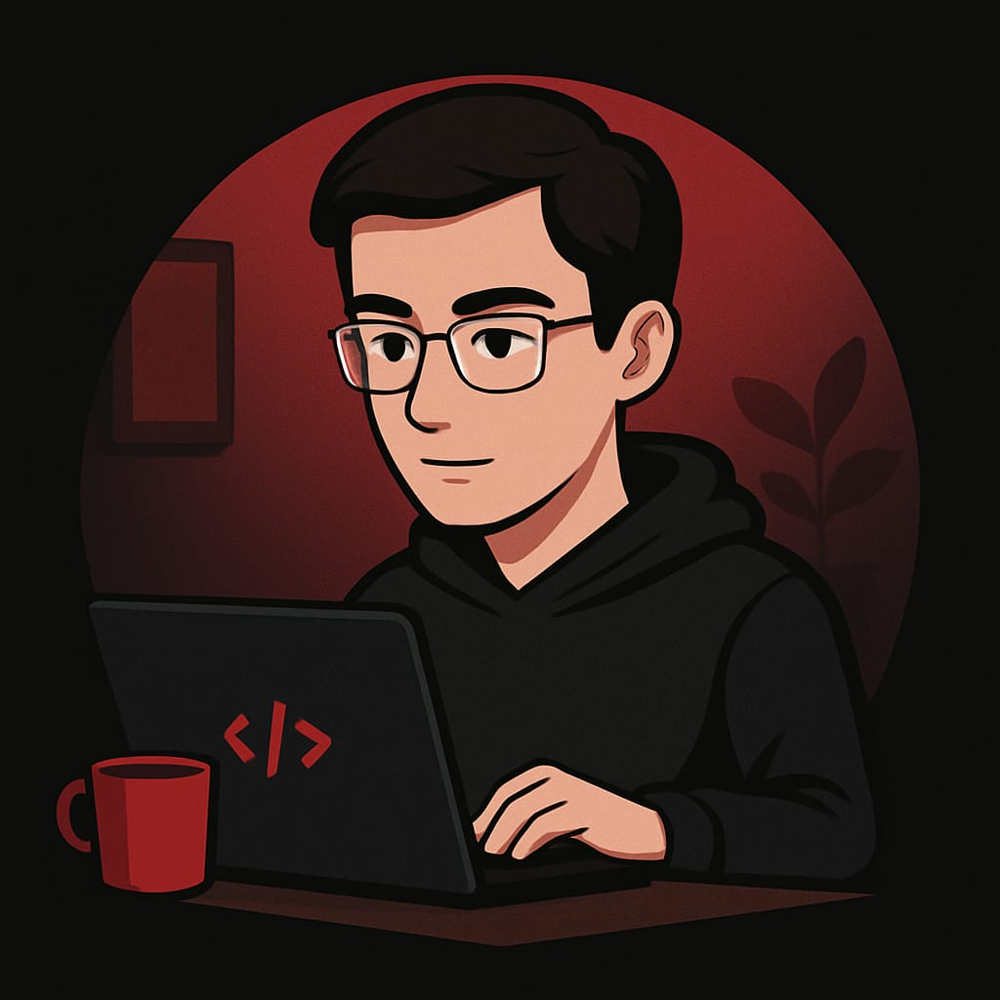

Sobre Mim
Olá, meu nome é Lucas, tenho 20 anos, estou cursando Engenharia de Software, também estou ingressando na área de frontend com a Alura (inclusive, recomendo o curso), este é meu portifólio e também meu primeiro projeto.
Atualmente estou fazendo estágio no INSS, foi minha primeira oportunidade de emprego, infelizmente não há chances de efetivação, então estou procurando por algo na minha área (TI), ou seja, um estágio ou um emprego CLT como iniciante na área.
